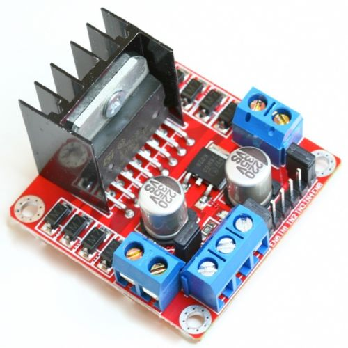
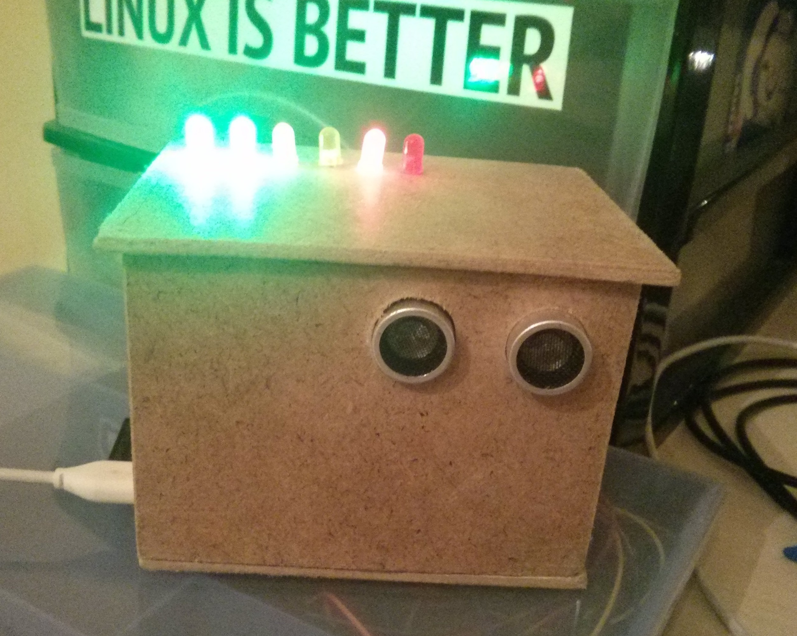
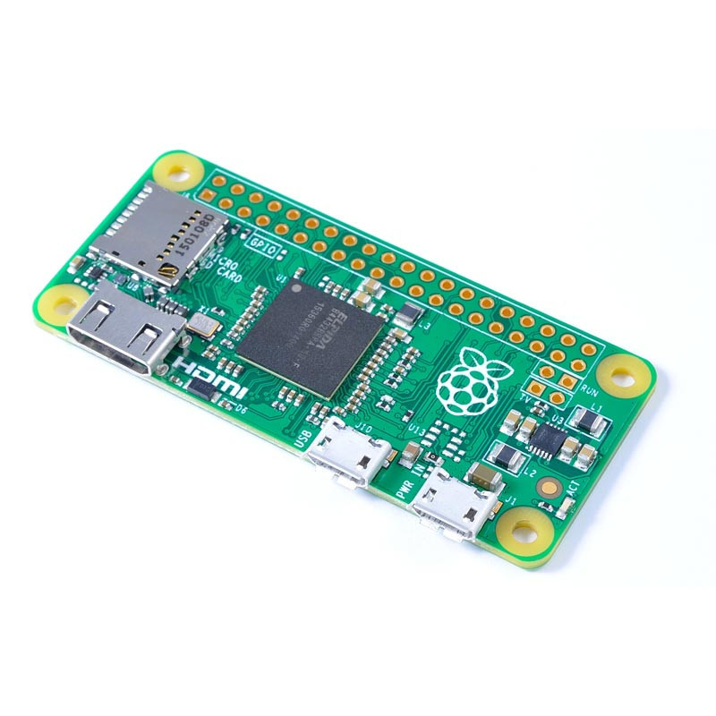

Sensor de Distancia con unha Raspberry Pi
Marcos Chavarría Teijeiro
Primeiro intento...
Problemas
Intensidade da fonte de alimentación
Intensidade dos pines 
Peso...
Segundo intento: sensor de distancia

Arduino vs. Raspberry Pi
Arduino pensado para a educación -> PINes protexidos, analóxicos e en maior cantidade.
Actualmente
unha placa Raspberry Pi é mais cara.

Raspberry Pi é un ordenador de proposito xeral.